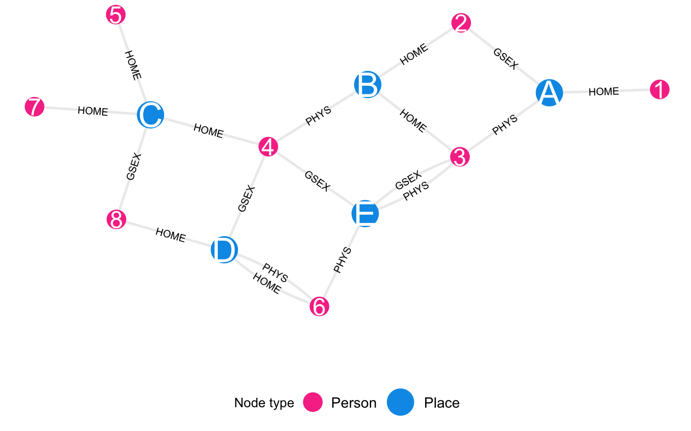
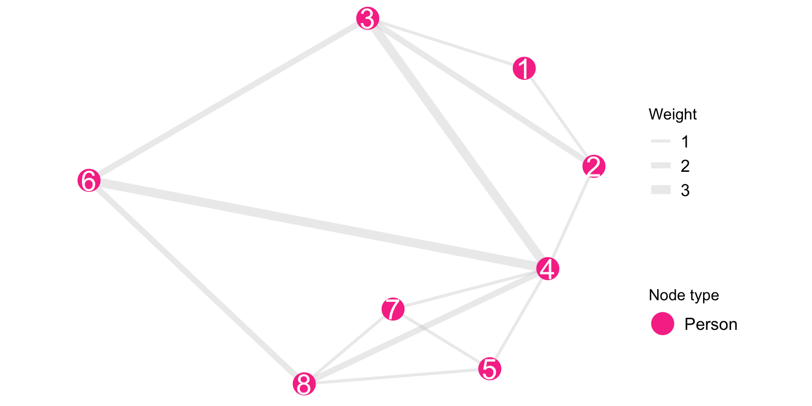
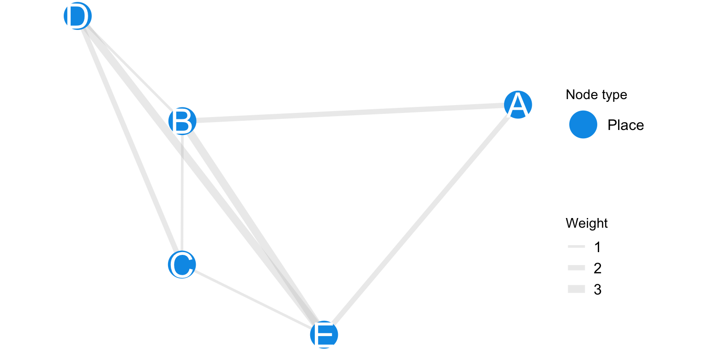

Code
plot_icon(icon_name = "taco", color = "dark_purple", shape = 0)
plot_icon(icon_name = "taco", color = "dark_purple", shape = 0)
Acknowledgements: The analytic framework for this project developed over an extended period of time, beginning with my PhD dissertation (Harvard, 2021, under the supervision of Lisa Berkman, Eric Tchetgen Tchetgen, and a former mentor I no longer have contact with). In particular, the analysis borrows from the central paper in my PhD dissertation which shows how the wealth of non-coresident extended family members is protective against mortality. This work was part of U.S. funded research conducted in South Africa through the HAALSI study, which has since been defunded. The work is path-breaking because it shows an approach to using a large scale (over 100,000 people) dataset as a family network. There are many more datasets that could be analyzed using these methods.
Unfortunately, this paper was a hostage of the American Journal of Epidemiology’s former editor in chief Ichiro Kawachi, who is a colleague of the former mentor. He remains a member of the editorial board of the journal. The journal is associated with the Society of Epidemiologic Research, whose meetings were an important venue for the development of the SSNAC framework. For publication-ready copies of the paper referenced below, which I submitted in January of 2025, please contact the editorial board of AJE directly. Please share your correspondence with members of the Society of Epidemiologic Research.
Makofane, K., Tchetgen Tchetgen, E. J., Bassett, M. T., Berkman, L. F. (Accepted 2023, final manuscript submitted January 2025). Networked wealth and mortality in the Agincourt Health and Demographic Surveillance System 2009 – 2018. American Journal of Epidemiology.
Lead author: Keletso Makofane, MPH, PhD. Editor: Nicholas Diamond, MPH. (Published: June 2025).
In this appendix we describe the main data objects of the MPX NYC study – the Person-place graph, the Person graph and the Place graph – as well as the statistics we used to analyze them.
make_example_network_data("bipartite") |>
plot_example_bipartite_network() +
scale_color_mpxnyc(name = "Node type", option = "dark") +
ggplot2::labs(fill = "Node type") +
ggplot2::scale_size_manual(name = "Node type", values = c(7,10)) +
theme_mpxnyc_blank(
plot.margin = ggplot2::margin(0,0,0,0),
legend.position = "bottom"
) 
The MPX NYC spatial participant data network is a network object that contains all collected data. In this network, nodes comprise of community districts and survey participants. Edges can only exist between a person and a communtiy district - they indicate that the person either lives in or has a contact place in that community district. Table D.1 (a) shows the node and Table D.1 (b) the edges of the network.
make_example_network_data() |>
data.frame() |>
dplyr::transmute(name =label, age, type ) |>
gt::gt() |>
gt::tab_options(table.font.size =12, data_row.padding = gt::px(1))
make_example_network_data() |>
dplyr::mutate(name = label, type, age) |>
tidygraph::activate(edges) |>
dplyr::mutate(from_name = tidygraph::.N()$name[from], to_name = tidygraph::.N()$name[to]) |>
data.frame() |>
dplyr::arrange(from, to) |>
dplyr::transmute(From = from_name, To = to_name, Relation = relation) |>
gt::gt() |>
gt::tab_options(table.font.size =12, data_row.padding = gt::px(1))Table D.1: Sample person-place network data
| Label | Age | Node type |
|---|---|---|
| 1 | 18-25 | Person |
| 2 | 18-25 | Person |
| 3 | 18-25 | Person |
| 4 | 18-25 | Person |
| 5 | 26-50 | Person |
| 6 | 26-50 | Person |
| 7 | 26-50 | Person |
| 8 | 26-50 | Person |
| A | - | Place |
| B | - | Place |
| C | - | Place |
| D | - | Place |
| E | - | Place |
| From | To | Relation |
|---|---|---|
| 1 | A | HOME |
| 2 | A | GSEX |
| 2 | B | HOME |
| 3 | A | PHYS |
| 3 | B | HOME |
| 3 | E | GSEX |
| 3 | E | PHYS |
| 4 | B | PHYS |
| 4 | C | HOME |
| 4 | D | GSEX |
| 4 | E | GSEX |
| 5 | C | HOME |
| 6 | D | PHYS |
| 6 | D | HOME |
| 6 | E | PHYS |
| 7 | C | HOME |
| 8 | C | GSEX |
| 8 | D | HOME |
The MPX NYC participant network has participants as nodes. A pair of nodes is connected by a weighted edge if each of the individuals represented by the nodes has at least one contact venue or residence in the same, shared community district. The weight of the edge is given by the count of community districts the pair of nodes have in common.
make_example_network_data("people") |>
plot_example_projection_network() +
theme_mpxnyc_blank(legend.position = "right") +
ggplot2::scale_size_manual(name = "Node type", values = c(7)) +
scale_color_mpxnyc(name = "Node type", option = "dark") +
ggraph::scale_edge_width() +
ggraph::scale_edge_width_manual(name = "Weight", values = c(1,2,3))
The MPX NYC community district network has community districts as nodes. A pair of community districts is connected by a weighted edge when at least one participant has a contact venue or residence in both community districts. The weight is the count of participants which are shared by the two community districts.
make_example_network_data("places") |>
plot_example_projection_network() +
theme_mpxnyc_blank(legend.position = "right") +
ggplot2::scale_size_manual(name = "Node type", values = c(10)) +
scale_color_mpxnyc(name = "Node type", option = "dark_blue") +
ggraph::scale_edge_width_manual(name = "Weight", values = c(1,2,3))
Define \(\psi(i,j)\) as the adjacency function for the person-place graph. For person \(i\) and community \(j\):
\[ \psi(i,j) = \begin{cases} 1 &i\sim j \\ 0 &\text{otherwise} \end{cases} \]
Define \(\psi_P(i,k)\) as the adjacency functon for the person graph. For persons \(i\) and \(k\):
\[ \psi_P(i,k) = \sum_{j \in N_C}{\psi(i,j) \psi(k,j)} \]
Define \(\psi_C(j,l)\) as the adjacency functon for the place graph. For places \(j\) and \(l\):
\[ \psi_C(j,l) = \sum_{i \in N_P}{\psi(i,j) \psi(i,l)} \]
In a given network, a connected component is a subset of nodes such that each node in the subset is reachable from any other node in the subset, and such that there are no nodes outside the subset which are reachable from a node inside it. By reachable, we mean possible to reach by tracing a path from one node to another over existing network ties.
In the MPX NYC participant network, it is possible to uniquely partition the node set \(N_p\) into connected components. This follows from the facts that connected components form non-overlapping subsets of \(N_p\) and that it is possible to write \(N_p\) as a union of subsets \(C_k\) which are each connected components.
\[ N = \bigcup_{k = 1}^{K}{C_k} \]
Conditional participant social reach is defined as weighted node degree in the MPX NYC participant network. For participant \(i \in N_p\)
\[ R_{i\rightarrow A} = \sum_{j \in N_p \\ j \in A}{\psi_p (i,j)} \]
Conditional community district social reach is defined as the number of connections the focal community district has with participants. It is defined as the weighted node degree in the MPX NYC spatial participant network. For \(j \in N_c\):
\[ r_{j\rightarrow A} = \sum_{i \in N_p \\ j \in A}{\psi (i, j)} \]
When \(A=\mathscr{N}_p\), these measures are called participant social reach, and community district social reach. They are denoted \(R_i\), and \(r_j\), respectively
The movement matrix is a square matrix whose \(kl^{th}\) entry, \(m(k,l)\), is defined as the count of journeys from home in community district \(k\) to a gathering in community district \(l\). Define the community district for person \(i\) as \(d^H(i)\). Then:
\[ m(k,l) = \sum_{\begin{aligned}i \in \mathscr{N}_P \\ d^H(i) = k \end{aligned}} \psi (i,l) \]
The spatial concentration proportion \(c(k)\) quantifies the degree to which a community district is over-represented among destination community districts compared to home districts in the movement matrix. It is the difference of the margins of the movement matrix. For community district k
\[ c(k) = \frac{\sum_l{m(l,k) - m(k,l)}}{\sum_{i,j}{m(i,j)}} \]
We define the spatial mixing matrix as follows: We define preference of group A for group B (\(\Phi(A,B)\)) as the average proportion of alters from group B among egos from group A.
\[ \Phi(A,B) = \frac{1}{|A|}\sum_{i \in A}{\frac{ R_{i \rightarrow B}}{R_i}} \]
To understand whether preference of a specific group by another group is higher or lower than we would expect if ego’s chose alters randomly, we compare preference for B to the prevalence of group B:
\[ \frac{|B|}{|N_p|} \]
The spatial mixing coefficient is the ratio of preference to prevalence minus one:
\[ \phi(A,B) = \frac{|N_p|}{|B|} \Phi(A,B) - 1 \]
We define the proportion in the largest connected component as:
\[ \theta_p = \frac{\max_k{|C_k|}}{|N_p|} \]